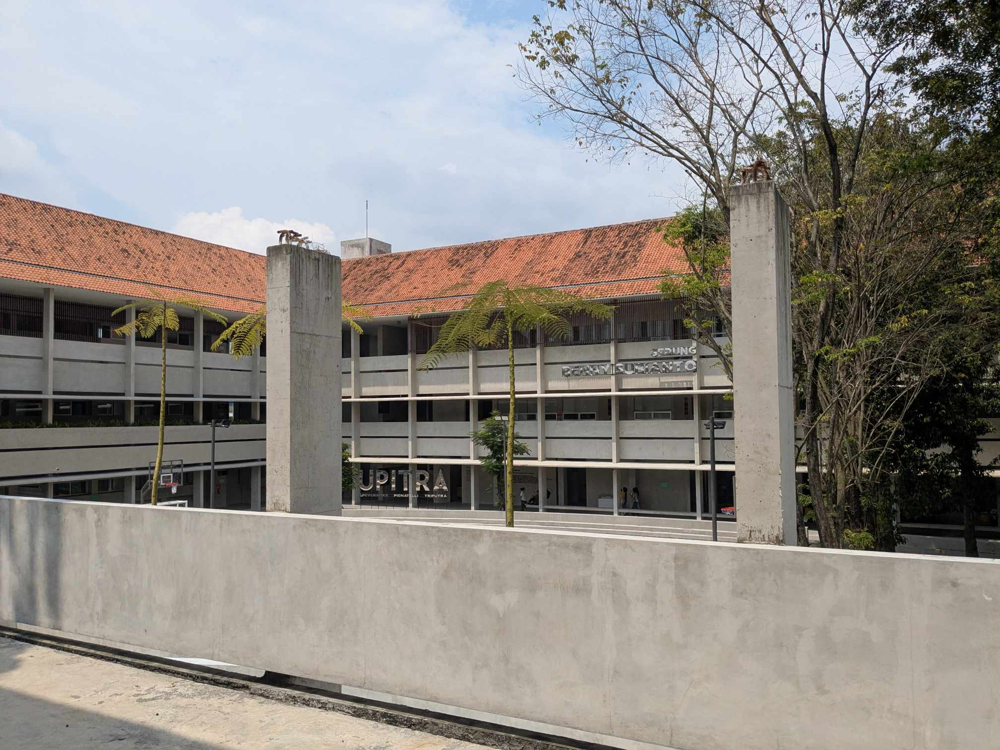

Program Studi
Informatika

Informatika
Program Studi Informatika FST Upitra berkomitmen untuk menghasilkan lulusan yang kompeten, kompetitif, dan berintegritas di bidang informatika, dengan fokus pada pengembangan solusi teknologi yang inovatif dan transformatif bagi masyarakat dan industri.
Visi
Program studi yang unggul dalam bidang informatika, berorientasi global, menjunjung tinggi nilai-nilai integritas dan bersemangat kebhinekaan.
Misi
Menyelenggarakan program studi Informatika secara efektif dan efisien untuk mendukung terlaksananya Tri Dharma perguruan tinggi. Menghasilkan sarjana informatika yang kompeten, kompetitif, memiliki pola pikir logis, sistematis, kedalaman spiritual, kemanusiaan, kemampuan berjejaring, dan profesional dalam memanfaatkan bidang ilmu informatika di lingkungan kerja. Menghasilkan penelitian yang unggul, kreatif, inovatif dan transformatif bagi masyarakat di bidang informatika. Memanfaatkan bidang ilmu informatika yang berdaya guna bagi masyarakat. Membangun kerja sama dan mengelola jejaring berkelanjutan dengan dunia pendidikan, masyarakat, pemerintah dan industri untuk mewujudkan keunggulan transformatif di bidang informatika.
Tujuan
Berkontribusi dalam memperluas akses pendidikan tinggi yang berkualitas dan terjangkau bagi masyarakat di bidang informatika. Menghasilkan sarjana bidang informatika yang bermoral, berintegritas, profesional, bertanggung jawab, dan mampu berkarya dengan ilmu informatika. Berkontribusi dalam pengembangan dan penelitian perangkat lunak yang unggul, solutif, inovatif dan transformatif bagi masyarakat dan kehidupan. Menerapkan ilmu informatika yang berdaya guna dan berhasil guna bagi masyarakat. Menjalin kerja sama dengan dunia pendidikan, masyarakat, pemerintah dan industri yang berkelanjutan, beretika, dan bermanfaat di bidang informatika.
Keunggulan
Kurikulum yang mengikuti perkembangan terkini bidang informatika. Pengajaran yang menggunakan pendekatan praktikal dan industrial yang berfokus kepada menganalisa kebutuhan dan proses bisnis perusahaan, serta mampu menghasilkan sistem yang sesuai dengan tujuan perusahaan. Program mentorship dari kalangan akademisi dan praktisi bagi setiap individu mahasiswa. Pemilihan konsentrasi yang disesuaikan dengan keunikan program studi, yaitu Industrial Data Science.
Profil Lulusan
Lulusan Program Studi Informatika FST Upitra siap berkarir sebagai Data Scientist, Data Analyst, Data Visualisasi, Data Engineer, Programming And Software Development, Artificial Intelligence Engineer, Data Engineer, Data Administrator, dan Technopreneur. Lulusan dengan profil Data Scientist memiliki kemampuan dalam mengambil atau mengumpulkan data yang besar, mengolah data tersebut serta menggali insight baru yang berguna bagi perusahaan. Lulusan dengan profil Data Engineer memiliki kemampuan dalam mengembangkan platform untuk data-data yang telah diolah dan ditafsirkan. Lulusan dengan profil Data Analyst memiliki kemampuan dalam mengatur dan menggunakan data untuk mendapatkan kesimpulan sesuai dengan proyek yang diamati. Lulusan dengan profil Data Administrator memiliki kemampuan dalam mengatur, mengelola, dan mengamankan data di satu sistem atau lebih. Lulusan dengan profil Technopreneur memiliki kemampuan dalam membuat peluang usaha dengan memanfaatkan teknologi yang sedang berkembang.